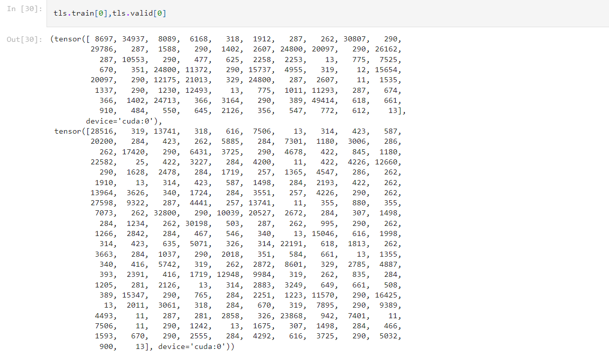
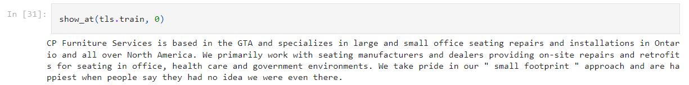
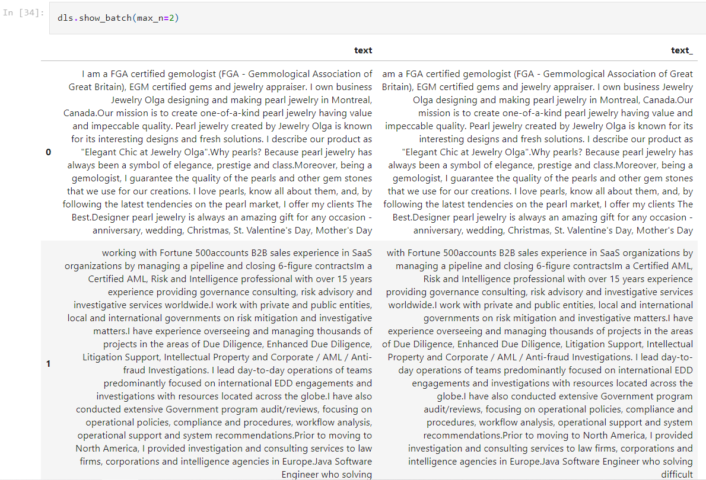
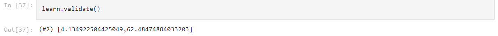
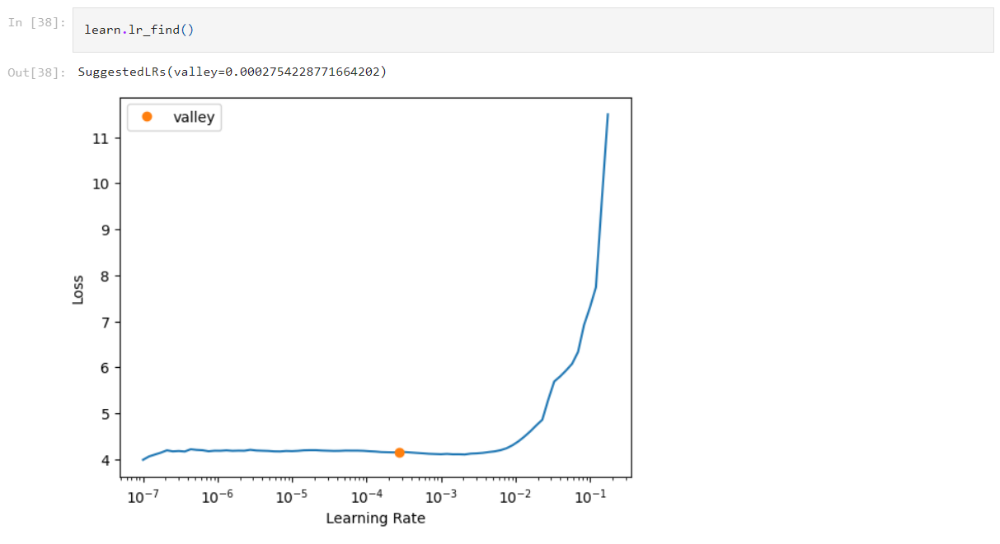
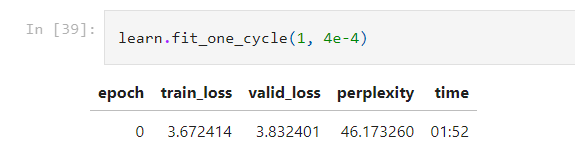
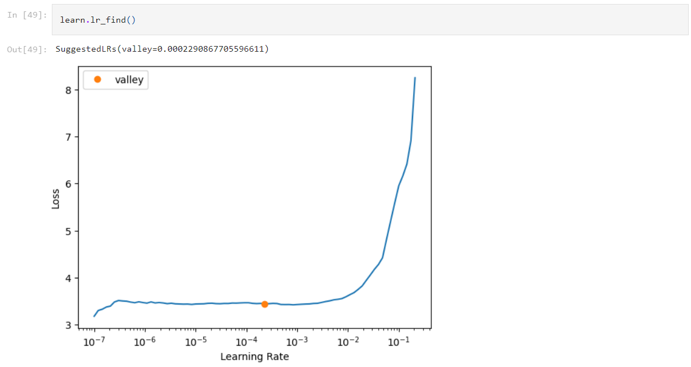
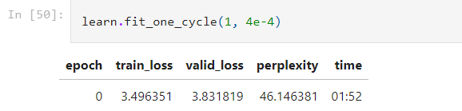

Background
Fast.ai is a high-level deep learning framework built on PyTorch that is highly flexible and easy to use. It’s developed by Jeremy Howard, which also used this framework with some torch to teach an extensive deep learning course that literally impacted people’s deep learning career trajectories. It’s so foundamental, detailed, yet easy to understand and intuitive. And I’ll use fast.ai to apply NLP techniques illustrated in his book to fine-tune gpt2 to make it write LinkedIn profile for me!
Basic fine-tuning of GPT2 using fast.ai
Data preparation
LinkDB provides LinkedIn profile sample datasets for various countries. To view the datasets, here is the url: https://nubela.co/blog/sample-data-for-linkdb/. I downloaded the US, Danish, Singapore, and Canadian datasets so that I have 40,000 base profiles to filter from. I also tried to download some data through their APIs, which proved to be too expensive. I did add the ones I got to the dataset.
I can access their profile bio by selecting the “summary” attribute in their profile objects. The data is initially very messy as expected, so I wrote codes to clean the data. First, I filtered out null values, string consists of only empty spaces, emails, urls, or punctuations and digits. I used regex to achieve this. Then I removed all formatting of texts, since some of the texts used special fonts and made it impossible to detect language. Here, I’m removing non-English summaries, since I don’t want imbalanced classes – the model would have to adapt to the other languages too if I keep them, while not having enough data on those languages at the same time, making it hard to generate bios in those languages.
Finally, I saved only the bios to a csv.
Importing pre-trained model
Fast.ai makes it very easy to fine-tune a language model. Here I only did the very basic fine-tuning steps. It worked well for sentences with 30 - 50 words. However, you can definitely see patterns in the generated sentences, and it’s bad for generating longer sentences. Later, I’ll update with more complex tuning techniques and explanations.
Here, I followed the official guide from fast.ai: https://docs.fast.ai/tutorial.transformers.html
First, we import the pre-trained model:
from transformers import GPT2LMHeadModel, GPT2TokenizerFast
pretrained_weights = 'gpt2'
tokenizer = GPT2TokenizerFast.from_pretrained(pretrained_weights)
model = GPT2LMHeadModel.from_pretrained(pretrained_weights)
Then we use fast.ai’s text library to create a DataLoader object that has a number of attributes to be used when training the model.
Loading data into fast.ai
First we need to wrap torch’s tokenizer into fast.ai’s Transform object:
from fastai.text.all import *
class TransformersTokenizer(Transform):
def __init__(self, tokenizer): self.tokenizer = tokenizer
def encodes(self, x):
device = 'cuda' if torch.cuda.is_available() else 'cpu'
toks = self.tokenizer.tokenize(x)
return tensor(self.tokenizer.convert_tokens_to_ids(toks)).to(device).long()
def decodes(self, x): return TitledStr(self.tokenizer.decode(x.cpu().numpy()))
Here, I defined device and turned the tensor ids into long format. This is because the model only accepts long or int format ids, and without this step some of the bios will return float ids instead, which will results in an error when training/validating.
We build the DataLoader step by step, first build a TsfmList which stands for “TransformedList”:
# split function that will be applied to split the dataset into train/val
splits = [range_of(train_len), list(range(train_len, l))]
tls = TfmdLists(bios, TransformersTokenizer(tokenizer), splits=splits, dl_type=LMDataLoader)
You can access the sequence ids like this:

And use show_at() to see the text version:

To finally build the DataLoader, we just need to specify the batch size and sequence length:
bs,sl = 4,256
dls = tls.dataloaders(bs=bs, seq_len=sl)
To see a mini-batch, we can use the show_batch() function, like so:

Fine-tuning the model
Here we only apply basic fine-tunings and I’ll update to more complex ones later.
Fast.ai have the Callback object which functions similar to Pytorch’s Hook. Basically, we define a function that will be inserted into a certain stage of the training process and run. Here, we define a DropOutput() callback that replace the predictions with only its first element, which is a list of output token ids, and thus allow us to fine-tune the model by calculating the loss of outputs.
class DropOutput(Callback):
def after_pred(self): self.learn.pred = self.pred[0]
Finally, we can create out Learner object, which is a fastai object grouping data, model and loss function in order to handle model training or inference.
learn = Learner(dls, model, loss_func=CrossEntropyLossFlat(), cbs=[DropOutput], metrics=Perplexity()).to_fp16()
Here we use .to_fp16() to tell the program to use mix-precision during training to speed up the process.
Perplexity is a basic metric for evaluating language tasks. According to this post, perplexity, equivalently, the cross entropy, measures the amount of “randomness” in our model. If the perplexity is 3 (per word) then that means the model had a 1-in-3 chance of guessing (on average) the next word in the text. For this reason, it is sometimes called the average branching factor.
In general, a perplexity score between 10 - 50 is really good. The state-of-the-art is around 10. The less the score is, the better the model. Also, it scales with the size of the text dataset. Worst case scenario, it equals to the size of vocabulary of the dataset.
We can check how good the model is without any fine-tuning step:

62.5 is not too bad considering the size of our dataset.
Now we just need to utilize the following two techniques to fine-tune the model:
-
lr_find(): this is a fast.ai function based on a paper that automatically finds the best learning rate for your training. We call this before training to estimate the best learning rate. -
fit_one_cycle(): or otherwise called 1cycle policy. Here we didn’t utilize the full potential of this technique, but the idea is to train with discriminative learning rates and gradual unfreezing. When fine-tuning LLMs, we want the initial layers like the embedding and first couple layers to have more aggressive learning rates so that they can be optimized more easily, and use more conservative learning rates for higher level layers towards the end so that they are more easily generalized to new tasks. Gradual unfreezing is used coupled with discriminative learning rates, unfreezing layers deeper and deeper after usingfit_one_cycle()with different learning rates every time to incorporate layers gradually.
First we find the best learning rate:

I didn’t use the precise learning rate here, which I’ll also fix later.

After training for just one epoch, we already got a perplexity score less than 50!
Here is a snippet of codes that uses pre-trained model before fine-tuning:
ids = tokenizer.encode('I’m an enthusiastic business management')
t = torch.LongTensor(ids)[None]
preds = model.generate(t)
tokenizer.decode(preds[0].numpy())
Which produced the following sentence: “I’m an enthusiastic business management consultant. I’m a big fan of the company and I”
Now we try with our model after fine-tuning one epoch:
prompt = "I'm a business professional with 10 years of"
prompt_ids = tokenizer.encode(prompt)
inp = tensor(prompt_ids)[None].cuda()
inp.shape
preds = learn.model.generate(inp, max_length=70, num_beams=5, temperature=1.5)
tokenizer.decode(preds[0].cpu().numpy())
Here we’re being ambitious and trying a sequence length of 70. The result is good in the beginning, but the sentence soon starts to behave a little weird: “I’m a business professional with 10 years of experience working in the financial services industry. I have a strong background in financial analysis, financial reporting, and financial reporting. I have a strong background in financial analysis, financial reporting, and financial reporting. I have a strong background in financial analysis, financial reporting, and financial reporting. I have a strong background”
What if we train it for 1 epoch again without applying any of the other advanced techniques described above?


Again I was misunderstanding the lr_find() function, and this will be updated later.
Trying again with a different prompts and sequence length of 75.
prompt = "I've founded"
prompt_ids = tokenizer.encode(prompt)
inp = tensor(prompt_ids)[None].cuda()
inp.shape
preds = learn.model.generate(inp, max_length=75, num_beams=10, temperature=1.5)
tokenizer.decode(preds[0].cpu().numpy())
“I’ve founded and led a number of startups in the tech space. I’m currently working on a few of them, but I’m looking forward to connecting with people from all walks of life to learn more about what it takes to be a successful entrepreneur.I am a recent graduate from the University of Texas at Dallas with a Bachelors of Science in Computer Science. I”
Actually seems better!
Another example starting with “Dedicated Film professional” and sequence length of 50:
prompt = "Dedicated Film professional"
prompt_ids = tokenizer.encode(prompt)
inp = tensor(prompt_ids)[None].cuda()
inp.shape
preds = learn.model.generate(inp, max_length=50, num_beams=10, temperature=1.5)
tokenizer.decode(preds[0].cpu().numpy())
“Dedicated Film professional with a demonstrated history of working in the film industry. Skilled in Film Production, Film Editing, Film Production, and Film Production. Strong arts and design professional with a Bachelor of Arts (B.A.) focused in Film”
Cool!
Training it for one more epoch, and try this again, we get:
“Dedicated Film professional with a demonstrated history of working in the film and television industry. Skilled in Photography, Film Production, Photography, and Videography. Strong arts and design professional with a Bachelor of Arts (B.A.) focused in Film”
The skills part looks a bit better! It might due to chance, though. We try another example with the same sequence length(50).
prompt = "Machine Learning Engineer"
“Machine Learning Engineer with a demonstrated history of working in the information technology and services industry. Skilled in Python, Java, C, C++, and JavaScript. Strong information technology professional with a Bachelor of Science (B.S.) focused in Computer Science”
Neat!
prompt = "Passionate Animator"
“Passionate Animator with a demonstrated history of working in the animation industry. Skilled in Sketching, Animation, Animation, and Visual Effects. Strong arts and design professional with a Bachelor of Fine Arts (BFA) focused in Fine Arts and Design from University of California, Irvine.Experienced”
I really like this! They even changed the university that they go to (they went to University of Texas at Dallas in a previous example). Seems like something is working.
Upon more experimentation, it seems that anything over 50-60 words is going to be repetitive. In our next update, I’ll apply more advanced fine-tuning techniques and see if the performance improves.